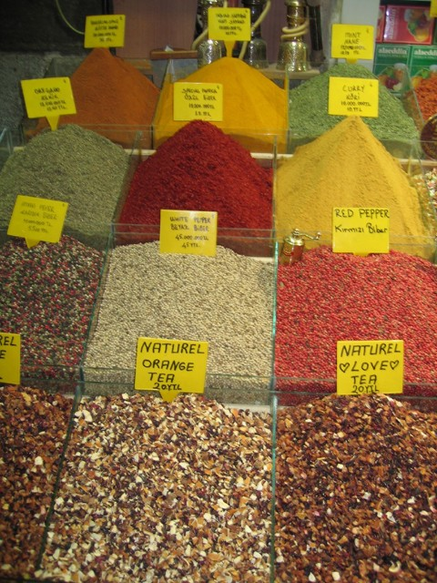

ZB-0230-v1 · authoring_candidate

{
"id": "ZB-0230-v1",
"blockers": [],
"review": [],
"advisory": [],
"metrics": {
"width": 1200,
"height": 1600,
"mode": "RGB",
"exif_orientation": 1,
"frame_count": 1,
"global_640_proxy": {
"contrast_p90_p10": 124.0,
"gray_entropy_bits": 7.498467484184834,
"edge_fraction_16": 0.291728085050874
},
"object_count": 11,
"objects_per_MP": 5.729166666666667,
"class_count": 8,
"known_fraction": 1.0,
"repeated_classes": 3,
"spatial_entropy_4x4": 0.8194033592047789,
"median_bbox_short_px": 180.0,
"p10_bbox_short_px": 145.0,
"edge_touching_count": 1,
"nearcolor_pair_count": 0,
"different_class_neighbor_pairs": 10,
"nearcolor_neighbor_fraction": 0.0,
"bbox_overlap_pair_count": 0,
"han_text_coverage": 0.0,
"distinct_dependency_regions": 4,
"effective_counterfactuals": 1
},
"source": {
"kind": "real_photo",
"url": "https://commons.wikimedia.org/wiki/File:Spice_Bazaar_18283738.jpg",
"license_url": "https://creativecommons.org/licenses/by/2.0/",
"authorization": "verified",
"scene_id": "commons:1613524"
},
"difficulty_status": "not_evaluated",
"annotation_provenance": "manual_sample_regions",
"preview": "001.jpg",
"nearcolor_pairs": [],
"overlap_candidates": [],
"roi_metrics": [
{
"id": "A",
"file": "001_roi1.png",
"contrast_p90_p10": 105.0,
"gray_entropy_bits": 7.206724145006634,
"edge_fraction_16": 0.054217199558985664
},
{
"id": "B",
"file": "001_roi2.png",
"contrast_p90_p10": 120.0,
"gray_entropy_bits": 7.304386179766236,
"edge_fraction_16": 0.05579048453399825
},
{
"id": "C",
"file": "001_roi3.png",
"contrast_p90_p10": 122.0,
"gray_entropy_bits": 7.445895486012254,
"edge_fraction_16": 0.30705014938799113
},
{
"id": "D",
"file": "001_roi4.png",
"contrast_p90_p10": 119.0,
"gray_entropy_bits": 7.405555479644418,
"edge_fraction_16": 0.2527180748483747
}
],
"reasoning_metrics": {
"node_count": 8,
"max_depth": 5,
"branch_nodes": 0,
"join_nodes": 1,
"multi_visual_join_nodes": 1,
"output_count": 1,
"outputs_with_visual_ancestry": 1,
"output_visual_coverage": 1.0,
"state_nodes": 1,
"parameter_nodes": 1,
"output_evidence_regions": {
"out": [
"A",
"B",
"C",
"D"
]
}
},
"platform_points": [
{
"xy": [
100,
767
],
"label": "C1 多色颗粒，区别于右侧纯色胡椒"
},
{
"xy": [
513,
635
],
"label": "白胡椒标牌与其后方白色颗粒"
},
{
"xy": [
460,
1020
],
"label": "ORANGE TEA 标牌指向前排茶料"
}
],
"decision": "authoring_candidate"
}